BIBI PROJECTION MAPPING CAFE
The first time I encountered holographic projection was when I visited the Shanghai World Expo in 2010. I remember walking through the United States Expo Pavilion, where there was an interactive exhibit with windmills and rolling hills. Waving your hand in front of it would cause different reactions, and the impression was obviously so strong that I still think about it 16 years later!
The second time I experienced projection paired with interaction was at teamLab Borderless in Tokyo. All of the exhibits were just so beautiful and man was it an experience walking through them! I highly recommend everyone to visit. So when I started seeing people online build their own DIY holographic projection setups, I also wanted to try myself! Around the same time, my friends were also coming to visit so we ended up making it one of the activities we would do together. We decided on creating a themed projection-mapping café where we would project different visuals while eating café food to merge storytelling, projection, food, and the idea of a café into one experience.
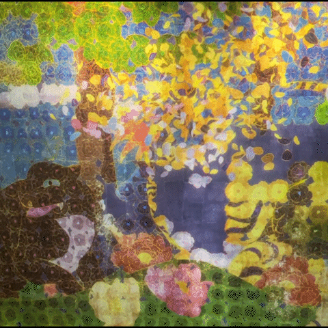
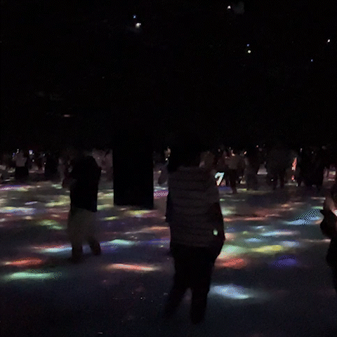
→ Determining the story
As we developed the idea, we realized we wanted to build a story around it to make it more meaningful- and that’s how our original character, Bibi, was created. Inspired by soft, pastel Sanrio-style characters, Bibi is a sea slug (one of my favorite aquatic creatures) who is happy-go-lucky, carefree, and tries to live every day to its fullest. Bibi has long, ear-like appendages,almost like a dog’s ears, that trail behind when they move. This design choice really reflects Bibi’s personality as Bibi is the type to be determined when they are curious but laidback!
The story we ended up telling was called Bibi Wants to Remember Yesterday. The core message was simple: enjoy today! Bibi wakes up from a wonderful dream and tries to remember it, but can’t. So Bibi recruits their friends to help search for it, and one friend suggests asking an elderly dragon who knows everything. However, when Bibi finally finds the elderly dragon, he asks why Bibi is so intent on remembering the past instead of appreciating the present moment.
→ Menu Design/Recipe Testing
Once we had the story mostly written, we started deciding what we wanted our menu to be as well as recipe test the week before our event day. This process was super fun to me as we had to creatively think about how to cook unique foods that related to the story. One of my favorite dishes that we created was inspired by a beach scene in the story: korean prinkle chicken coated in white cheddar powder to resemble sand, paired with blue rice paper that we soaked and fried to create ocean waves! Another fun dish was the final course: a Bibi-shaped crêpe. We ate so many crepes the week prior and even in the end, they still didn't look that great haha but it still has its charm.
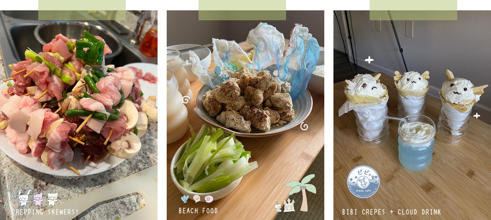
→ Illustration/Projection Creation
A huge part of the project was illustration based. Every element, from the characters to the food, menu, and overall atmosphere was drawn to feel cohesive with the atmosphere. Most of the drawings were done in Procreate, with the animations built in After Effects. Oh man, After Effects learning curve is pretty steep! We definitely struggled in creating cooler motion graphics in the short time period we had. For the actual projection, we ended up porting everything to Powerpoint to easily switch projection animations as well as avoid the default video play button that could ruin the immersion.
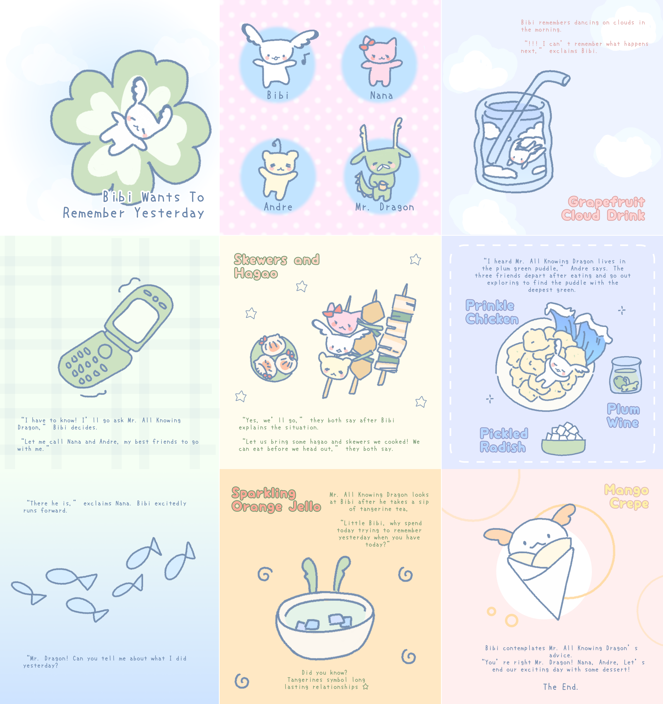
→ Constructing a Space
As for the café setup, there were definitely a lot of constraints. My apartment corner was definitely not ideal, but we tried our best in creating underwater-themed space using objects I already had. Adding a blue lamp and fairy lights quickly made the space feel more immersive, almost like being underwater. Playing underwater-inspired music and lo-fi throughout the experience also helped set the mood. One of the hardest challenges was actually getting the projector aligned correctly so it mapped onto the table. We had to be careful to not bump into the projector as moving it would completely offset the projections. The table itself was another issue as it wasn’t white... In darkness, our projections showed up clearly but as our event was set to be during late lunch, the sun would shine brightly into my apartment. This caused the projections not to show up as clearly as we hoped. To reduce this problem, we tried placing parchment paper over the table to brighten the surface, but it wasn’t as effective as we hoped. Still that's what we ended up going with. Lastly, the projector I had was quite large compared to many DIY setups. Furthermore, There was no high shelf to place the projector on to project downwards on the dining table. What we ended up doing was placing a 5ft tall tripod in front of the table and projecting from there. The look ended up being a little unconventional, but we tried decorating the beams with blue plastic flowers and keychains!
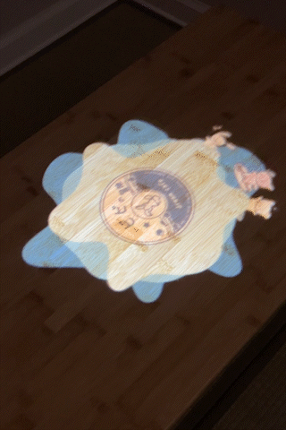
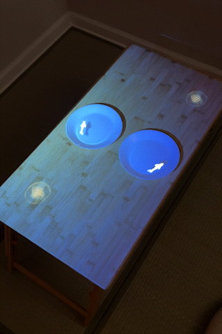
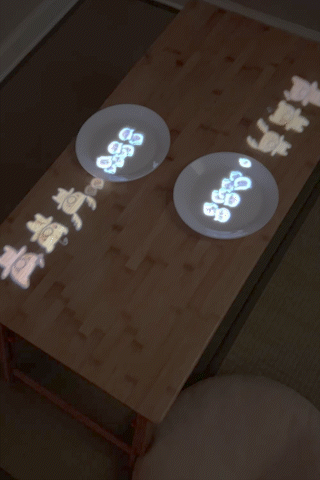
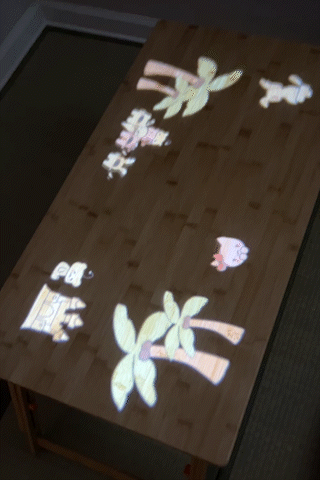
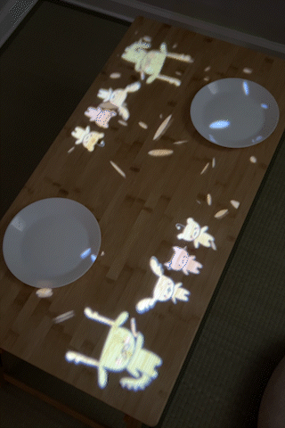
→ Conclusion
Finally when the Saturday of the event came around, I felt unexpectedly nervous. Up until that point, the project existed in thought and I wasn’t sure how it would translate with actual "customers". I invited two of my coworkers to experience it, and as soon as they arrived, it was time! The overall experience was structured with me playing the waiter role and guiding them through the experience, while my friends were in charge of cooking and managing the media experience. First I would introduce each dish as well as place story cards that we printed out for them to read at their own pace. Then either the food or projection would be presented between courses. It was surprising how many steps I took in my small apartment as I moved from the kitchen to the dining table(I think I got in like 3k steps??).
It was a success!!
That said, this project taught me how intense running a café would actually be. The logistics alone, timing dishes, serving, cleaning were tiring. The night before the event, we stayed up until 1 a.m. finishing preparations, and when it was finally over, the sense of relief was very real. Nonetheless, it was rewarding to see my coworkers experience something new and to finally bring an idea I’d been holding onto into reality.
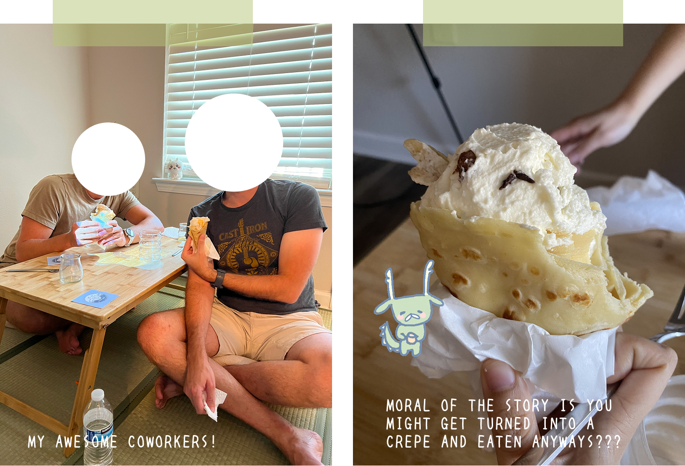
Emotionally, Bibi represents a kind of freedom I’ve been thinking about a lot. And that's the ability to care deeply and try wholeheartedly without letting the outcome define the experience. It’s easy to get caught up in results or to chase something until it becomes overwhelming. But as I slowly mature, I’m learning to value the act of trying itself, and to let that be enough.
Overall, this project reminded me how much I love designing experiences for others. Even if no one knows about it, being able to experiment, cook creatively, build immersive spaces, and write about it now is so fun. Bibi started as a small idea, but for me, its proof that I can turn my own curiosity into something tangible!
I think about the World Expo a lot when I reflect on this project. That experience only existed for a short time, and I was nine years old when I saw it, but I still remember how impressed I felt interacting with those projections. Sixteen years later, I don’t remember the exact details of the pavilion, but I remember how it made me feel curious,and excited that something on a screen could respond to me.
Meaningful experiences don’t need to last forever. The Expo and this café were both temporary by design. When the projections turned off, the food was eaten, and the space returned to normal, nothing remains except the memory. Even though it required a lot of work for something that disappeared almost immediately, I got a shared experience of collaboration with friends and telling a story to my coworkers! That's what life is about!
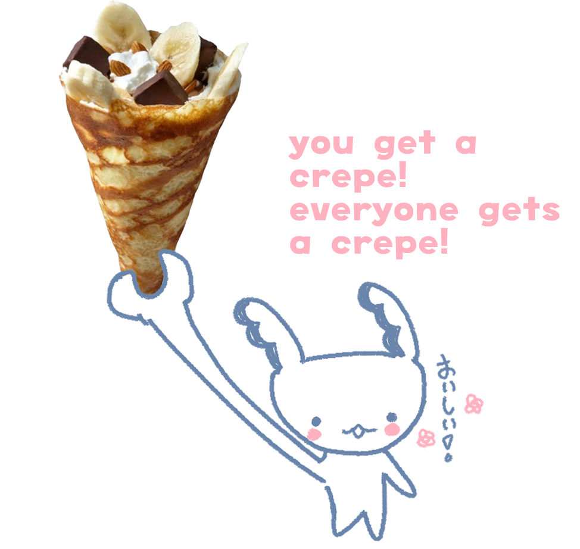